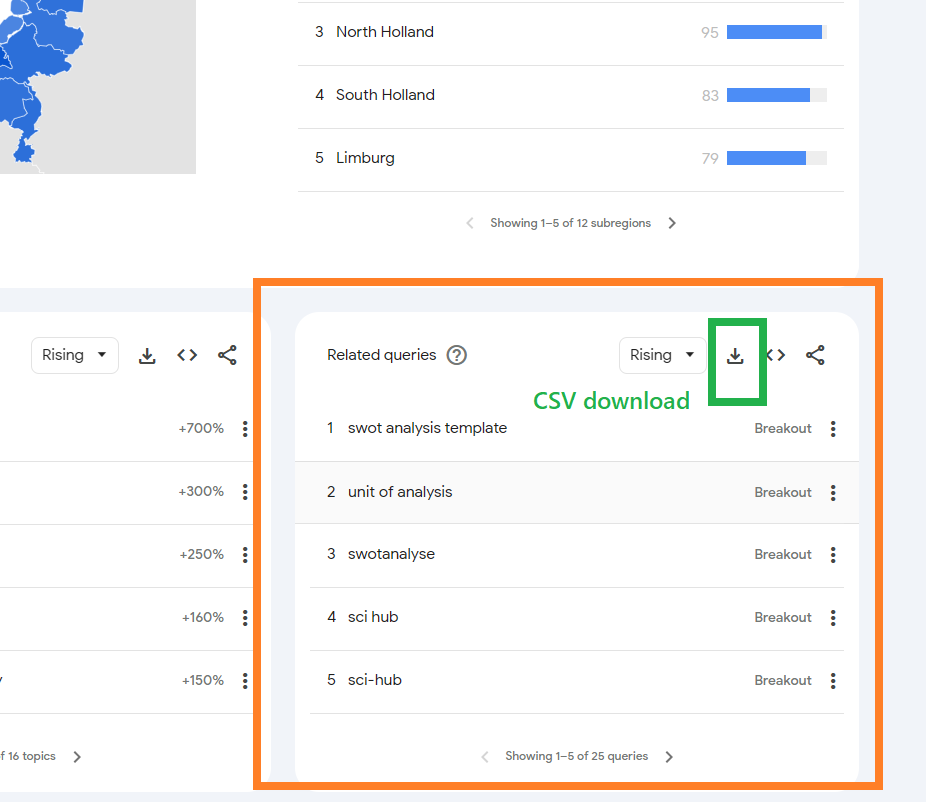
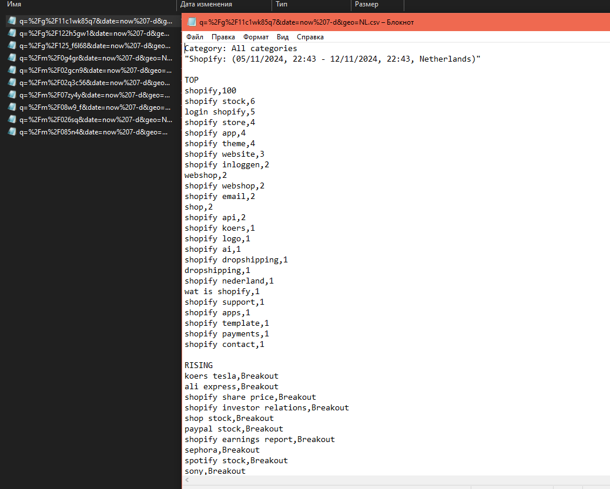
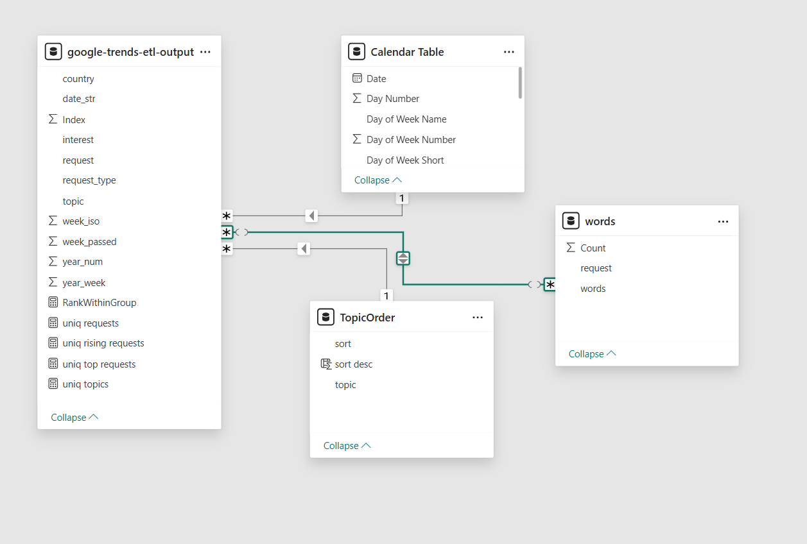
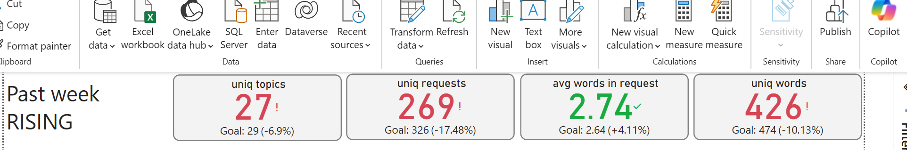
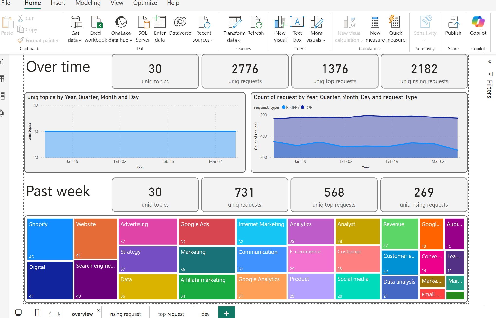
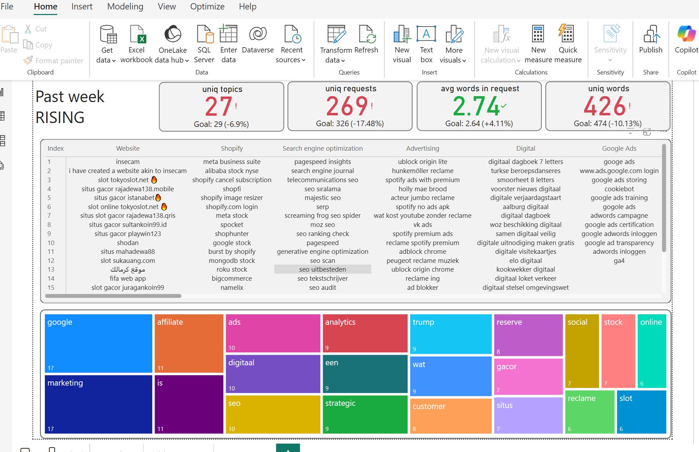
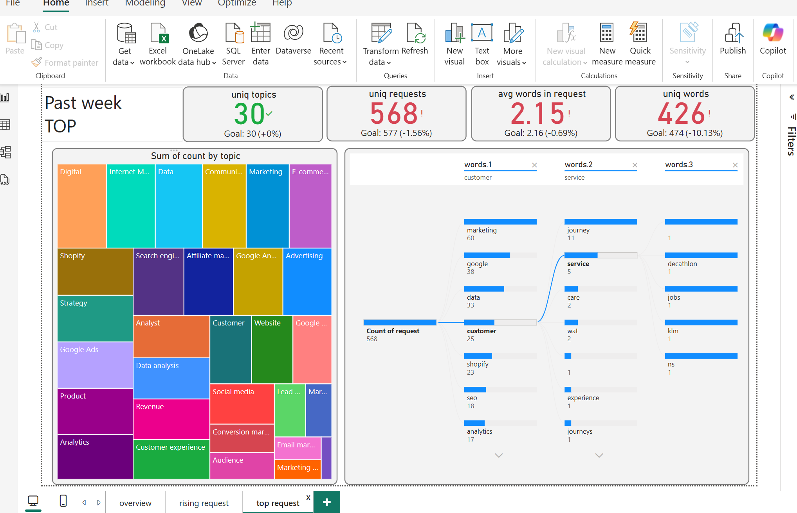

Mastering Power BI: Google trends reporting
The marketing team aims to increase the success rates of articles by personalizing content and using audience segments to create more appealing text for target audiences. They plan to create engaging graphic materials and page layouts, discover new unexplored topics, and identify low-competition areas.
To hit this project's targets, together with the team, we decided to use Google Trends data. To facilitate insight delivery, I proposed using Power BI as expert, a handy tool for data transformation and visualization. In this case study, I will cover pwer bi professional dashboard creating from scratch:
- Source Data
- Power Query ETL process
- Data Modeling
- DAX leveraging
- Visualization
Additionally, I will consider some trade-offs and provide a summary.
Source Data structure
Google trends UI 

Power Query ETL process
To create the power bi ETL on expert level with power query, we need to consider the following requirements:
- Easy scaling
- Simple maintenance
- Hardware capability
- Logic portability
Storing source data as files in a folder ensures easy scalability if needed and can be portable to other ETL tools like DWH based on Google Storage or AWS S3 or Microsoft Fabric. The ETL logic can be implemented using BigQuery or Redshift. Separating the whole process into a step-by-step power bi expert level flow helps with maintenance and error detection because we can easily control each step and monitor results. The suggested logic does not relate to any hardware requirements but instead follows the direct requirements from the Power BI tool.
Click to expand Power BI Power Query code
let
Source = Folder.Files("C:\Your\Folder\Path"), // Replace "C:\Your\Folder\Path" with the actual path to your folder
FilteredHiddenFiles = Table.SelectRows(Source, each [Attributes]?[Hidden]<>true),
InvokeCustomFunction = Table.AddColumn(FilteredHiddenFiles, "Transform File", each #"Transform File"([Content])),
ExpandedTransformFile = Table.ExpandTableColumn(InvokeCustomFunction, "Transform File", Table.ColumnNames(#"Transform File"(#"Sample File"))),
RemovedOtherColumns = Table.SelectColumns(ExpandedTransformFile,{"Name", "Transform File.Category", "Transform File.Date", "Transform File.Terms", "Transform File.Value"}),
RenamedColumns = Table.RenameColumns(RemovedOtherColumns,{{"Name", "FileName"}, {"Transform File.Category", "Category"}, {"Transform File.Date", "Date"}, {"Transform File.Terms", "Terms"}, {"Transform File.Value", "Value"}}),
ChangedTypes = Table.TransformColumnTypes(RenamedColumns,{{"FileName", type text}, {"Category", type text}, {"Date", type text}, {"Terms", type text}, {"Value", type text}}),
SplitDate = Table.SplitColumn(ChangedTypes, "Date", Splitter.SplitTextByDelimiter(",", QuoteStyle.Csv), {"StartDate", "EndDate", "Location"}),
ChangedTypes1 = Table.TransformColumnTypes(SplitDate,{{"StartDate", type date}, {"EndDate", type date}, {"Location", type text}}),
TrimmedText = Table.TransformColumns(ChangedTypes1,{{"Terms", Text.Trim, type text}})
in
TrimmedText
// Function to transform each file
(BinaryData as binary) =>
let
Source = Csv.Document(BinaryData,[Delimiter="#(tab)", Columns=1, Encoding=1251, QuoteStyle=QuoteStyle.None]),
PromotedHeaders = Table.PromoteHeaders(Source, [PromoteAllScalars=true]),
SplitColumn = Table.SplitColumn(PromotedHeaders, "Category: All categories", Splitter.SplitTextByDelimiter(":", QuoteStyle.Csv), {"Category", "Data"}),
ChangedType = Table.TransformColumnTypes(SplitColumn,{{"Category", type text}, {"Data", type text}}),
SplitData = Table.SplitColumn(ChangedType, "Data", Splitter.SplitTextByDelimiter("(", QuoteStyle.Csv), {"Date", "Terms"}),
ChangedType1 = Table.TransformColumnTypes(SplitData,{{"Date", type text}, {"Terms", type text}}),
SplitTerms = Table.SplitColumn(ChangedType1, "Terms", Splitter.SplitTextByDelimiter(null, QuoteStyle.Csv), {"Terms", "Value"}),
ChangedType2 = Table.TransformColumnTypes(SplitTerms,{{"Terms", type text}, {"Value", type text}}),
TrimmedText = Table.TransformColumns(ChangedType2,{{"Terms", Text.Trim, type text}, {"Value", Text.Trim, type text}}),
FilteredRows = Table.SelectRows(TrimmedText, each ([Terms] <> null and [Terms] <> "")),
RemovedLastRow = Table.RemoveLastN(FilteredRows,1)
in
RemovedLastRow
// Sample File used to generate column names
#"Sample File" = Csv.Document(File.Contents("C:\Your\Folder\Path\SampleFileName.csv"),[Delimiter="#(tab)", Columns=1, Encoding=1251, QuoteStyle=QuoteStyle.None]) // Replace with an actual file name in your folder
Power BI Data Modeling
Getting the final power query output table is not enough. We need to create additional tables to:
- Make date-relative calculations
- Make phrase comparison calculations
- Make word-level calculations
To get all these additional calculations accessible in visualization, we have to combine all these tables in the data model. This is professional way to orginise relations between many sources and table in Power BI

It is important to take into account that data modeling affects charts' cross-filtering behavior. As a Power BI professional with more than 5 years of experience, I strongly recommend considering this step highly important. A poorly designed data model can lead to incorrect calculations that are hard to track.
DAX flexible way for sophisticated reporting
One of "super power" of Power BI is ability alter mesures withoout necessety to change data model.
 Here is a screenshot showing a bunch of KPIs that indicate the difference between the past week and the week before. To make this calculation possible, DAX language allows redefining filter contexts. Thus, even if a chart has a filter for the past week, the comparison value is taken from the context with a filter for one week before the past. It's kind of magic, isn't it?
Click to expand DAX code
uniq requests = DISTINCTCOUNT('google-trends-etl-output'[request])
uniq requests 0 week =
CALCULATE(
[uniq requests],
'google-trends-etl-output'[week_passed] IN { 0 }
)
uniq requests 1 week =
CALCULATE(
[uniq requests],
'google-trends-etl-output'[week_passed] IN { 1 }
)
Power BI Visualisation
Power BI provides the ability to create multi-interactional dashboards, meaning interactions with one chart can affect nearby charts (this behavior can be adjusted). This feature allows experts users to extract valuable information with just a few clicks. For developers, it is highly professional to consider how potential consumers will utilize the dashboard, what questions they are trying to answer, and what the dashboard consumer journey should be. Of course, it is impossible to cover all possible paths and answer all questions. Therefore, understanding the key questions the dashboard must answer is the most important objective before starting.
By leveraging a Top-Down analysis pattern, the dashboard will be separated into a list with more general information in the first sheet and more specific details in the subsequent sheets.

When dealing with data over time, it is crucial to understand how it associates with past week results. This analysis helps in detecting potential problems with the data and ensures accurate and professional reporting. By comparing the current week's data with the previous week's data, we can identify trends, anomalies, and areas that need attention.

Playing around with rising request words spectrum and requests grouped by topics can make it easy to see patterns between topics and requests and grow team expertise.

Top requests provide valuable information about interest structure, where many query words can be regrouped over different topics and reveal the main interest concept formed by user search behavior.
Trade-off's and future development power bi dashboard
Trade-offs
- Data Freshness: Google Trends data may not always be up-to-date.
- Data Granularity: Limited detail for niche analyses.
- ETL Complexity: Setting up and maintaining ETL can be time-consuming.
- Performance: Large datasets may slow down dashboards.
- Data Integration: Combining with other data sources can be challenging.
- Learning Curve: Requires time to learn Power BI and DAX.
Future Development
- Enhanced Integration: Combine Google Trends with other data sources.
- Real-time Processing: Capture and analyze trends promptly.
- Advanced Analytics: Use machine learning for deeper insights.
- Custom Visualizations: Tailor visualizations to business needs.
- User-friendly Dashboards: Design interactive and easy-to-use dashboards.
- Scalability: Optimize for larger datasets.
- Automated Reporting: Generate and distribute reports regularly.
- Collaboration: Improve sharing and commenting features.
By addressing these trade-offs and focusing on future development, the Google Trends analysis using Power BI can become a powerful tool for understanding user behavior and driving data-driven decisions.
Conclusion
In conclusion, Power BI can grow expertixe and provide the team with access to data insights hidden in Google Trends. Developing such a dashboard requires be professional in both development and user-market understanding to interpret the dashboard's charts in terms of user behavior and the process of extracting valuable information that can be implemented by the content team. Playing around with chart filters allows for a deep dive into user interest, increasing the chances of crafting content that appeals to the audience.